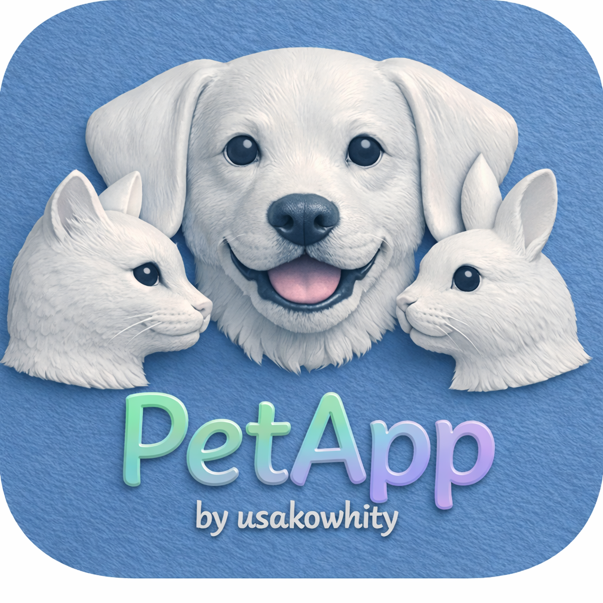
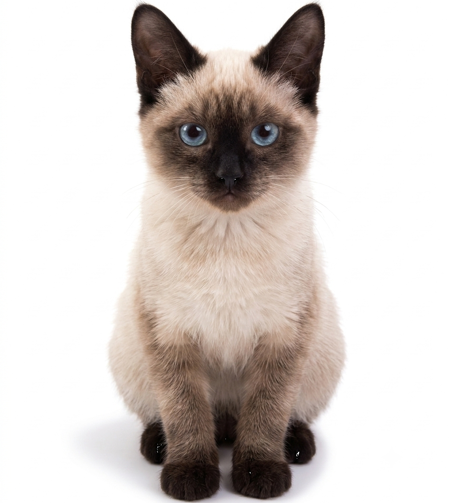

シャム猫「Mimi」の AI ペットデモ版

PetApp2 Mimi は、シャム猫「Mimi」の画像・動画を使った AI ペットアプリのデモ版です。 PetApp2-portable をベースにしており、15種類の状態切り替えや顔認識・音声認識にも対応しています。
デモ版では、ユーザーがお試しする楽しみを残すため、あえて15種類すべての状態の画像/動画を generated フォルダに含めていません。まずはお気に召した状態に相当する画像/動画生成を試してみてください。